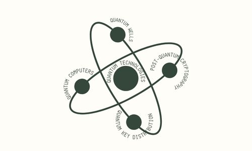

Hi there! I'm
Ashley Smith
I'm a PhD student focusing on creating more human-centred legal systems within the QUT School of Law.
Get in touchAbout Me
My research interests focus on the intersection of law, emerging technologies, and legal design. I'm interested in exploring how we can explain, design, and conceptualise our legal systems in ways that are more accessible, understandable, and human-centred.
- Legal Design
- Rules as Code
- Legal Research
Education
July 2026 – Present
Doctor of Philosophy (PhD)
Queensland University of Technology (QUT)
2019 – 2026
Bachelor of Laws (First Class Honours)/Bachelor of Science (Biological Sciences) with Distinction
Queensland University of Technology (QUT)
Research Experience Overview
- March 2026 – June 2026 Research Assistant QUT School of Law
- November 2025 – February 2026 Vacation Research Student 2025/2026 QUT Faculty of Business & Law Vacation Research Experience Scheme (VRES)
Research

A Regulatory Taxonomy of Quantum Technologies
As part of the QUT Faculty of Business and Law Vacation Research Experience Scheme (VRES), I conducted research on domestic and international statutory definitions of quantum technologies.
View Abstract Here →Reconceptualising Rules as Code (RaC) with Legal Design Patterns
For my Laws Honours thesis, I explored how the RaC process can be reconceptualised and augmented with the legal design methodology of legal design patterns to enhance usability.
Publication under review in the Computer Law & Security Review Journal (mid-2026).
Outside of work, you'll find me...
... on a nature walk, practicing my macro fungi photography skills
... spending time with George and Daisy (the Golden Retrievers)
... exploring Australia and New Zealand's best waterfalls


Contact
Feel free to reach out anytime!